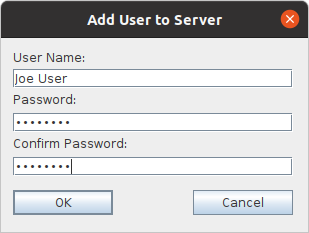
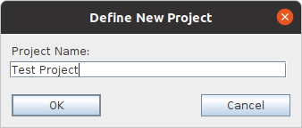

|
QVCS Enterprise -- Installation and Getting Started...Step 7: Add users to the server:You now need to add at least one user (besides the ADMIN user) to the server. Select the top node in the user pane (it should have the name of the server that you defined in Step 4). Right click and select the Add user menu option. Fill out the fields in the resulting dialog, and click OK. Note that you'll need to remember the password that you enter here. (The user can separately change their password at a later time).  Repeat this process for as many users as you expect to use this server. (Though other users can be added later if necessary). Step 8: Define a New Project:You now need to define a project. A server can have any number of projects, but it must have at least one project in order for the server to provide any version control functions. Select the server you defined in Step 4, right click, and select the New Project menu option. On the resulting dialog, enter the name you want to use for the project. Also, enable the "Create reference copies on server" check box. If you are running your server on a Windows box, and/or you expect to have Windows clients, you should make sure to enable the "Ignore case in filenames" check box. Click OK.  |
| For the source code, see https://github.com/jimv39/qvcsos |